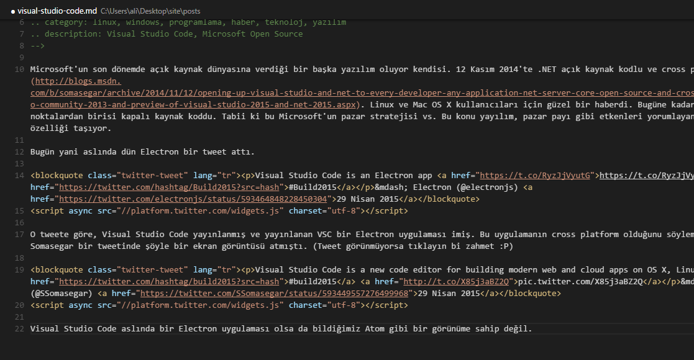

Visual Studio Code
Microsoft'un son dönemde açık kaynak dünyasına verdiği bir başka yazılım oluyor kendisi. 12 Kasım 2014'te .NET açık kaynak kodlu ve cross platform olmuştu. Linux ve Mac OS X kullanıcıları için güzel bir haberdi. Bugüne kadar dem vurduğumuz noktalardan birisi kapalı kaynak koddu. Tabii ki bu Microsoft'un pazar stratejisi vs. Bu konu yayılım, pazar payı gibi etkenleri yorumlayanlar için bir haber özelliği taşıyor.
Bugün yani aslında dün Electron bir tweet attı.
Visual Studio Code is an Electron app https://t.co/RyzJjVyutG #Build2015
— Electron (@electronjs) 29 Nisan 2015
O tweete göre, Visual Studio Code yayınlanmış ve yayınlanan VSC bir Electron uygulaması imiş. Bu uygulamanın cross platform olduğunu söylemek gerek. Hatta Somasegar bir tweetinde şöyle bir ekran görüntüsü atmıştı. (Tweet görünmüyorsa tıklayın bi zahmet :P)
Visual Studio Code is a new code editor for building modern web and cloud apps on OS X, Linux and Windows. #build2015 pic.twitter.com/X85j3aBZ2Q
— S. Somasegar (@SSomasegar) 29 Nisan 2015
Visual Studio Code aslında bir Electron uygulaması olsa da bildiğimiz Atom gibi bir görünüme sahip değil. Hatta bu yazıyı yazdığım ortamın ekran görüntüsünü paylaşayım.

Bunun haricinde dil desteği hakkında konuşmak gerekirse desteklediği diller şunlar.
Kod Renklendirme Özelliğinin Olduğu Diller
Bunların tamamına dil demek doğru mu bilemiyorum. Ancak şunları destekliyor
C++, jade, PHP, Python, XML, Batch, F#, DockerFile, Coffee Script, Java, HandleBars, R, Objective-C, PowerShell, Luna, Visual Basic, Markdown
Yukarıda belirttiğim dilleri sadece renklendiriyor ve eşleşmeleri belirtiyor.
Zaten bu yazıyı da VSC ile hazırlıyorum. Markdown desteği var. Markdown ile yazarken önizleme yapmak için CTRL+Shift+V yapabililirsiniz.
Tekrar geri dönüp düzenlemek için de aynı kısayolu kullanabilirsiniz.
IntelliSense, Linting, Outline Özelliğinin Olduğu Diller
Daha çok web geliştiricilerinin işine yarayacağını düşünüyorum. Keşke IntelliSense özelliğini falan Python için ya da Ruby için de verselerdi.
JavaScript, JSON, HTML, CSS, LESS, SASS
Refactoring ve Reference Arama Yapılabilen Diller
MS bu kendisini düşünmeden olur mu hiç?
C#, TypeScript
Yine bu editörün güzel yanlarından birisi de git desteği de var.
Yani version control işlemi de yapabiliyorsunuz. Ayrıca debugging işlemi de yapabiliyorsunuz.
Tabii bunu Asp.NET 5 ve NodeJS ile kullandığınızda çok tatlı olduğu kesin.
İndirme Linki
Viual Studio Code Download: https://code.visualstudio.com/
Customization: https://code.visualstudio.com/Docs/customization
Yorumlar
Comments powered by Disqus